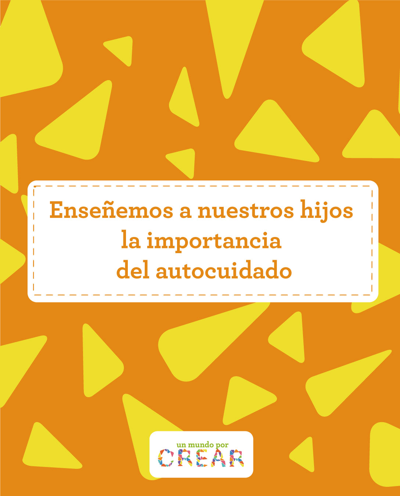

30 abr 2026Enseñemos a nuestros hijos la importancia del autocuidado
Cuando hablamos de autocuidado, debemos entender que es una tarea que se aprende desde los primeros años de vida y que impacta directamente en el bienestar físico, emocional y social de los niños.
En el entorno del jardín infantil, el autocuidado no solo se trata de hábitos de higiene, a nuestros pequeños les enseñamos a reconocer sus necesidades, expresar lo que sienten y participar activamente en su propio bienestar.
Enseñar a nuestros hijos a cuidarse es una responsabilidad muy importante en nuestro trabajo como padres, aprovechamos que estamos en temporada de picos respiratorios, para conversar sobre este tema y crear conciencia de que el autocuidado es un compromiso de todos.
En ciertas épocas del año, es común que aumenten las enfermedades respiratorias en los niños, especialmente en espacios como los jardines infantiles donde el contacto es constante. Por eso, desde nuestro jardín queremos invitar a todas las familias a reforzar medidas de cuidado que nos permitan proteger la salud y el bienestar de nuestros pequeños.
Los picos respiratorios suelen traer consigo síntomas como tos, congestión nasal, fiebre, dolor de garganta o dificultad para respirar. Aunque muchos de estos cuadros son leves, es fundamental prestarles atención oportuna para evitar complicaciones y reducir el riesgo de contagio entre los niños.
Pero el autocuidado, es mucho más que cuidarnos de los picos de enfermedades respiratorias y gastrointestinales. Incluye todas aquellas acciones que los niños pueden aprender para cuidarse a sí mismos, de acuerdo con su edad. Esto abarca desde lavarse las manos, alimentarse adecuadamente y descansar, hasta identificar emociones y pedir ayuda cuando la necesitan.
Más que una lista de tareas, con el autocuidado queremos fomentar la autonomía, la seguridad y la confianza en sí mismos. Desde casa, ustedes como familia pueden fortalecer el autocuidado con acciones sencillas:
- Rutinas claras: Establecer horarios para dormir, comer y jugar brinda seguridad y organización.
- Higiene diaria: Incentivar el lavado de manos, el cepillado de dientes y el baño como momentos positivos.
- Alimentación consciente: Involucrar a los niños en la elección de alimentos saludables.
- Reconocimiento de emociones: Preguntarles cómo se sienten y validar sus emociones.
- Descanso adecuado: Asegurar espacios de sueño tranquilos y suficientes.
Como padres también nos cuesta algunas veces parar un poco en nuestras actividades diarias cuando nos sentimos mal, por lo que ser conscientes de que nosotros también nos debemos cuidar, ayudará a nuestros hijos a aprender con el ejemplo de la importancia del autocuidado.
El cuidado es una tarea compartida. Cuando familias y jardín trabajamos en equipo, logramos crear un ambiente más saludable para todos.